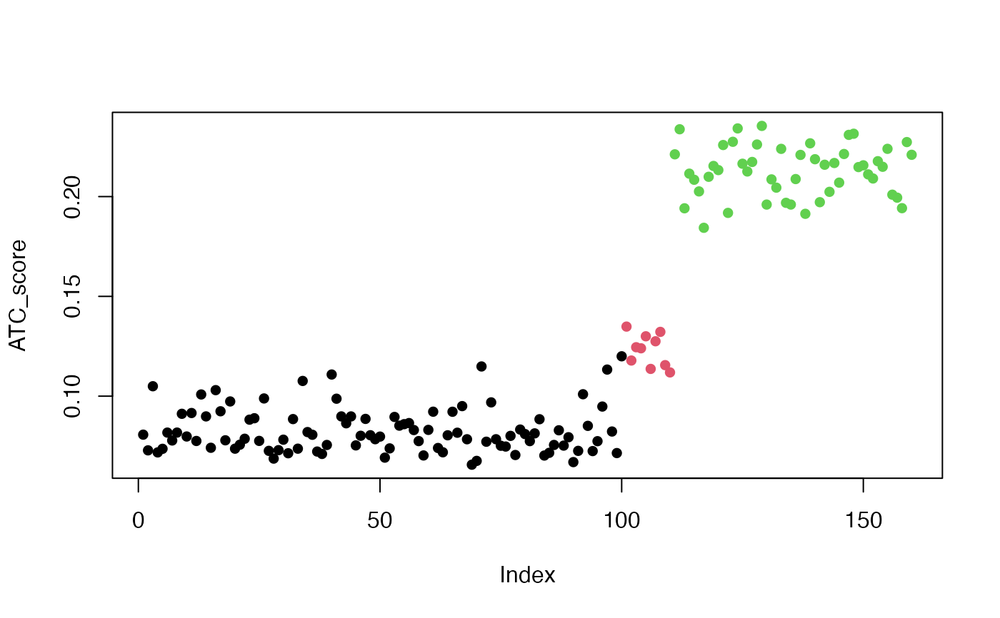

ATC.RdAbility to correlate to other rows
ATC(mat, cor_fun = stats::cor, min_cor = 0, power = 1, k_neighbours = -1, group = NULL, mc.cores = 1, cores = mc.cores, ...)A numeric matrix. ATC score is calculated by rows.
A function which calculates correlations.
Cutoff for the minimal absolute correlation.
Power on the correlation values.
Nearest k neighbours.
Number of cores. This argument will be removed in future versions.
Number of cores.
A categorical variable. If it is specified, the correlation is only calculated for the rows in the same group as current row.
Pass to cor_fun.
For a given row in a matrix, the ATC score is the area above the curve of the curmulative density
distribution of the absolute correlation to all other rows. Formally, if F_i(X) is the
cumulative distribution function of X where X is the absolute correlation for row i with power power (i.e. x = cor^power),
ATC_i = 1 - \int_{min_cor}^1 F_i(X).
By default the ATC scores are calculated by Pearson correlation, to use Spearman correlation, you can register a new top-value method by:
register_top_value_methods(
"ATC_spearman" = function(m) ATC(m, method = "spearman")
) Similarly, to use a robust correlation method, e.g. bicor function, you can do like:
register_top_value_methods(
"ATC_bicor" = function(m) ATC(m, cor_fun = WGCNA::bicor)
) If the number of rows execeeds 30000, it internally uses ATC_approx.
A vector of numeric values with the same order as rows in the input matrix.
set.seed(12345)
nr1 = 100
mat1 = matrix(rnorm(100*nr1), nrow = nr1)
nr2 = 10
require(mvtnorm)
#> Loading required package: mvtnorm
sigma = matrix(0.8, nrow = nr2, ncol = nr2); diag(sigma) = 1
mat2 = t(rmvnorm(100, mean = rep(0, nr2), sigma = sigma))
nr3 = 50
sigma = matrix(0.5, nrow = nr3, ncol = nr3); diag(sigma) = 1
mat3 = t(rmvnorm(100, mean = rep(0, nr3), sigma = sigma))
mat = rbind(mat1, mat2, mat3)
ATC_score = ATC(mat)
plot(ATC_score, pch = 16, col = c(rep(1, nr1), rep(2, nr2), rep(3, nr3)))
